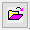

最終更新日：2023/1/12
ツール：デジタイザメニュー、または標準ツールバーのイメージのデジタイズボタン からアクセスできるデジタイザを使用できます。2D直交座標系、極座標系、三角座標系での自動トレースとデジタル化をサポートしています。
からアクセスできるデジタイザを使用できます。2D直交座標系、極座標系、三角座標系での自動トレースとデジタル化をサポートしています。
動画チュートリアルEnhanced Digitizerを参照してください。
イメージのデジタイズボタン をクリックして画像ファイルを選択するか、ツール: デジタイザ...メニューを選択し、インポートボタン
をクリックして画像ファイルを選択するか、ツール: デジタイザ...メニューを選択し、インポートボタン をクリックして画像ファイルを選択します。デジタイズを開始します。
をクリックして画像ファイルを選択します。デジタイズを開始します。
ツール: デジタイザ...メニューを選択し、クリップボードからインポートボタンをくクリックし、クリップボードの画像を取得します。デジタイズを開始します。
イメージウィンドウの画像をデジタル化する直接的な方法はありません。外部画像ファイルをデジタイズの操作を参照してください。 またはCtrl+Cでイメージウィンドウからコピーして、 クリップボード上の画像をデジタイズの操作を参照してください。
キーワード:インポート, スキャン, デジタイザ
必要なOriginのバージョン: Origin 2015 SR0以降